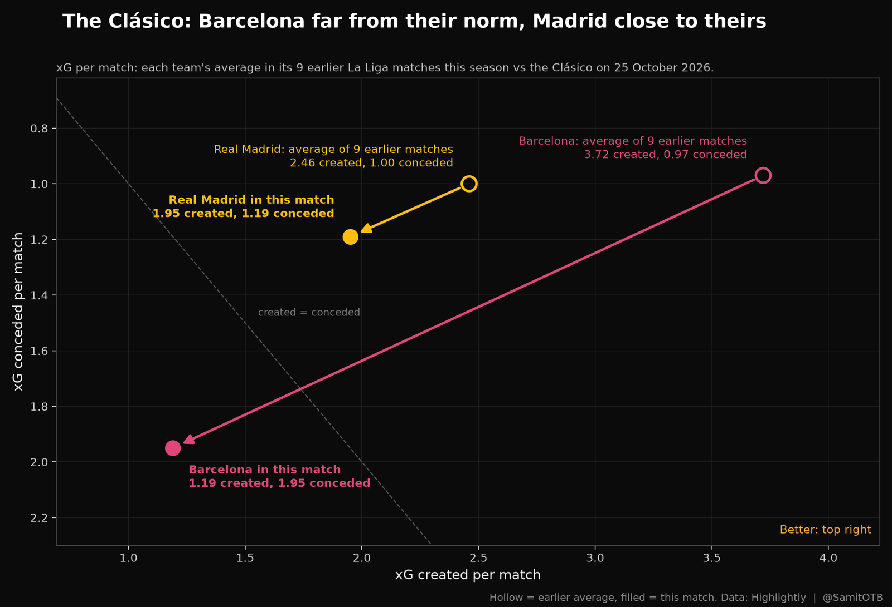
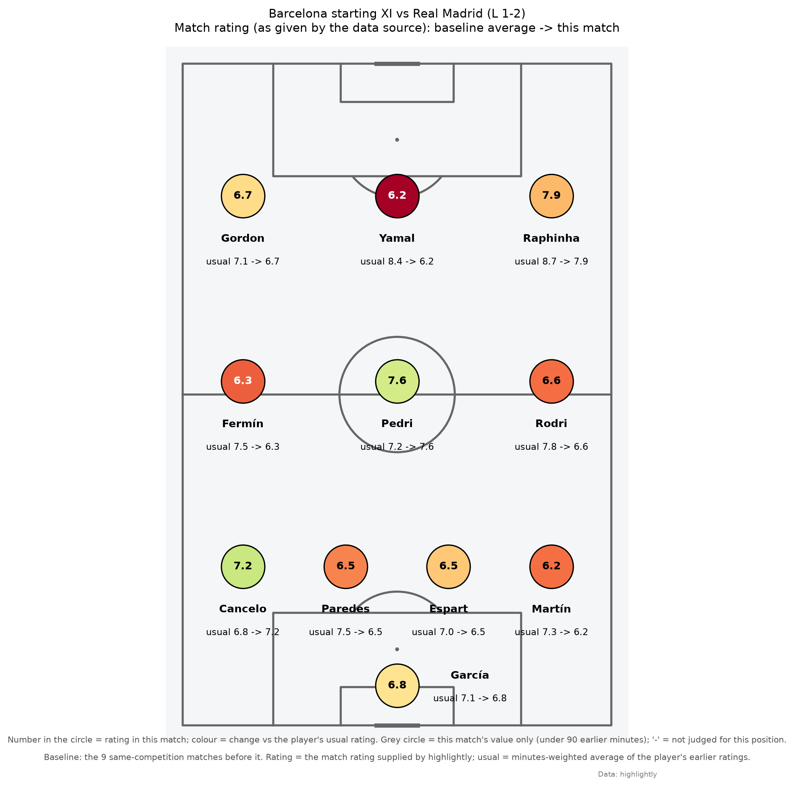
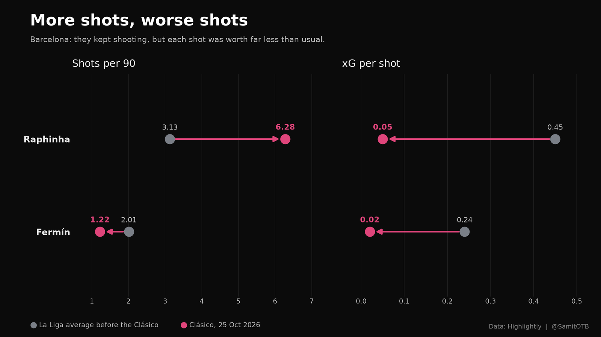
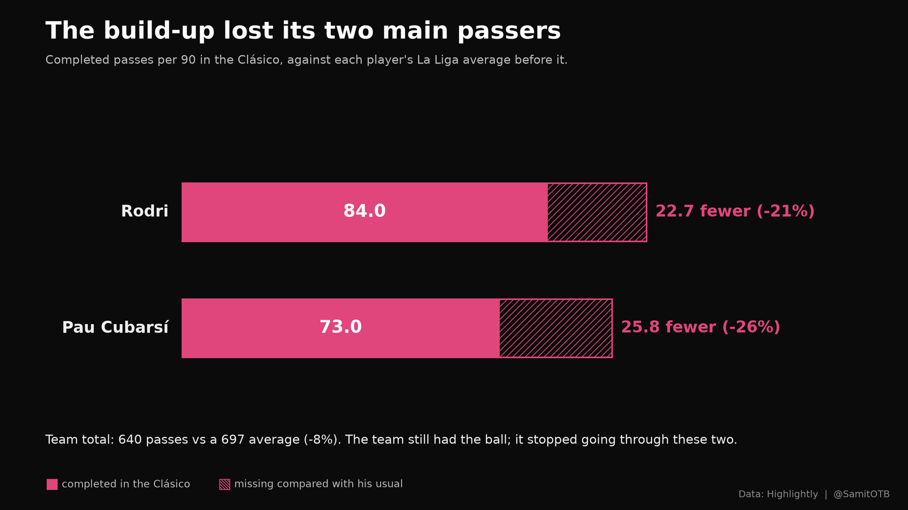
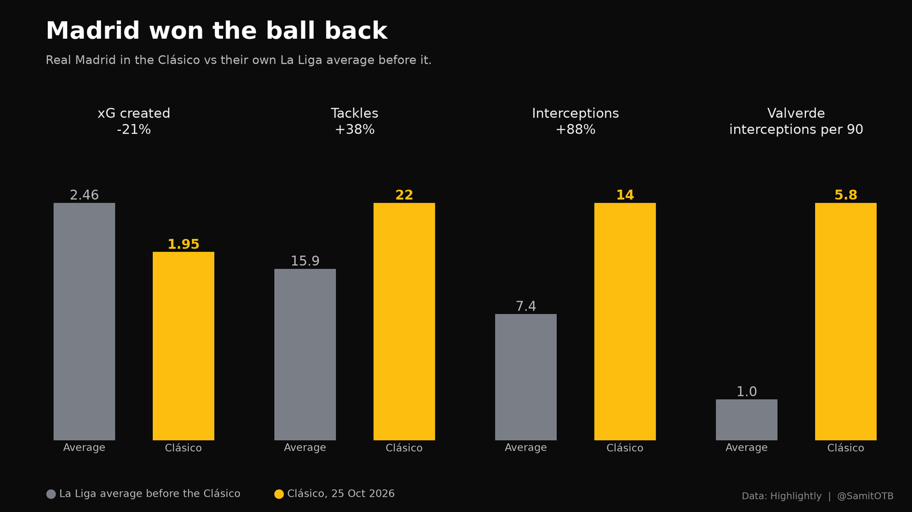

How Real Madrid Shut Down Barcelona’s Attack: The Clásico in Numbers
The result was fair. What vanished was Barcelona’s attack
Barcelona went into the Clásico having won all 9 of their La Liga games, 27 points from 27. Real Madrid had won 7 and lost 2, six points behind. Then the tables turned: Madrid won 2-1 at the Camp Nou.
The score, 1-2 on 25 October 2026, matched the chances: Barcelona produced 1.19 xG, Madrid 1.95.
The real story is what disappeared. In their 9 previous La Liga matches, Barcelona averaged 3.72 xG and conceded 0.97. Against Madrid they created 68% less and conceded twice as much.

The drop showed up across the team:
| Measure | Average of 9 earlier matches | vs Real Madrid |
|---|---|---|
| xG created | 3.72 | 1.19 |
| xG conceded | 0.97 | 1.95 |
| Completed dribbles | 14.2 | 8 |
| Duels won | 55% | 46% |
| Average rating of the 9 regulars | 7.63 | 6.78 |
Lamine Yamal was shut out as a creator, not as a shooter

Yamal still shot as often as usual, but he stopped setting up teammates. All figures are per 90 minutes, his average in the 9 earlier matches against this one:
- Key passes: from an average of 4.01 to 0.00.
- Expected assists (xA): from an average of 0.47 to 0.06.
- Shots: from an average of 4.74 to 5.00.
- Rating: from an average of 8.38 to 6.25, the biggest drop among Barcelona’s regulars.
That pattern suggests Madrid were content to let him shoot and focused on cutting his passing lanes. The data shows the outcome; the match shows the method, with Marc Cucurella shadowing him.
Anthony Gordon was the one creator who rose. His key passes per 90 went from an average of 1.81 to 4.24, and his xA from 0.19 to 0.33. It was not enough to replace what Yamal usually supplies.
More shots, worse shots
Barcelona kept shooting, but from poorer chances. The clearest case is Raphinha:

| Player | Shots per 90 (avg before → this match) | xG per shot (avg before → this match) |
|---|---|---|
| Raphinha | 3.13 → 6.28 | 0.45 → 0.05 |
| Fermín | 2.01 → 1.22 | 0.24 → 0.02 |
Raphinha doubled his shot volume while each shot became worth about a ninth as much. His completed dribbles per 90 also fell from an average of 2.2 to 0.0. Fermín went the other way on volume: he shot less, from an average of 2.01 per 90 to 1.22, and his xG per shot fell from 0.24 to 0.02, so his shots were worth about a twelfth of usual. Gordon’s xG per 90 fell from an average of 0.45 to 0.15.
Shooting more from worse positions is what a team does when it cannot get into good ones. It fits a Madrid side that defended its box and let Barcelona shoot from distance, though shot locations would confirm it.
The build-up lost its two main passers
As a team, Barcelona’s passing barely changed: 640 passes against an average of 697, and 88.9% accuracy against 90.6%. The drop was concentrated in the two players who usually start every move.

| Player | Completed passes per 90 (avg before → this match) | Change | Rating (avg before → this match) |
|---|---|---|---|
| Pau Cubarsí | 98.8 → 73.0 | -26% | 7.54 → 6.54 |
| Rodri | 106.7 → 84.0 | -21% | 7.77 → 6.61 |
Rodri, usually the hub of Barcelona’s passing, was less instrumental than in other matches: about a fifth fewer completed passes, and his rating fell from an average of 7.77 to 6.61.
When the centre-back and the deepest midfielder each lose about a quarter of their usual passing, the ball reaches the front line later and under more pressure. That matches what happened further forward: fewer dribbles, worse shots, and a creator who stopped creating.
Madrid’s side: give up the ball, win it back
Madrid did not beat Barcelona by attacking better than usual. They created 1.95 xG, below their own average of 2.46 in 9 earlier matches. They won by defending more actively and passing less.

Defending went up sharply in midfield (per 90, average before → this match):
- Federico Valverde: interceptions from 1.0 to 5.8.
- Aurélien Tchouaméni: tackles from 1.8 to 5.0, duels won from 3.0 to 6.0.
- Jude Bellingham: duels won from 8.4 to 13.0.
Their own passing fell, as you would expect from a side that ceded the ball:
- Dean Huijsen: completed passes from 68.9 to 38.0.
- Ibrahima Konaté: completed passes from 53.4 to 26.0.
- Bernardo Silva: completed passes from 71.5 to 24.8.
As a team, Madrid made 22 tackles against an average of 15.9, and 14 interceptions against an average of 7.4. They caught Barcelona offside 3 times; their opponents were usually caught 1.0 times per match.
Madrid’s surge in midfield ball-winning came in the same match as Yamal’s creative collapse. That timing fits a plan built around cutting off his supply, but these statistics cannot show who marked whom. The match answers it: Marc Cucurella shadowed Yamal and did a great job keeping him in his pocket.
The analysis was produced with Match Compare, an open tool I built that compares any match with a team’s other matches and checks every number in its written summaries against the data. Try the tool · Read the code